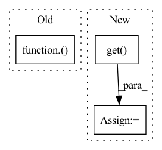

Pattern ID :8680
Before Change
def multiprocess_evaluation(pred_wavs, target_wavs, lengths):
stoi_scores = Parallel(n_jobs=30)(
delayed(stoi)(clean[0 : int(lens)], enhanced[0 : int(lens)], 16000)
for enhanced, clean, lens in zip(pred_wavs, target_wavs, lengths)
)
pesq_scores = Parallel(n_jobs=30)(
delayed(pesq)(
16000, clean[0 : int(lens)], enhanced[0 : int(lens)], "wb"
After Change
pesq_scores, stoi_scores = [], []
for process in processes:
pesq_score, stoi_score = process.get()
pesq_scores.append(pesq_score)
stoi_scores.append(stoi_score)
In pattern: SUPERPATTERN
Frequency: 5
Non-data size: 3
Instances Fragment ID: 31493729
Project Name: speechbrain/speechbrain
Commit Name: 6df59507d812d8f0cc8000a1e1bd7d239ad5e130
Time: 2020-07-07
Author: plantinga.peter@gmail.com
File Name: recipes/Voicebank/enhance_waveform_map/experiment.py
M Class Name: AnonimousClass
N Class Name: AnonimousClass
M Method Name: multiprocess_evaluation(4)
N Method Name: multiprocess_evaluation(3)
M Parent Class:
N Parent Class:
M File Name: recipes/Voicebank/enhance_waveform_map/experiment.py
N File Name: recipes/Voicebank/enhance_waveform_map/experiment.py
M Start Line: 79
M End Line: 88
N Start Line: 55
N End Line: 73
Before Change
try:
holidays_country = getattr(hdays_part2, country)(years=years)
except AttributeError:
try:
holidays_country = getattr(pyholidays, country)(years=years)
except AttributeError:After Change
"TU": "TR", // For compatibility with Turkey as "TU" cases.
}
country = substitutions.get( country, country)
if not hasattr(holidays, country):
raise AttributeError(f"Holidays in {country} are not currently supported!")
return getattr(holidays, country)(years=years) Fragment ID: 31493745
Project Name: ourownstory/neural_prophet
Commit Name: 7ed2d9cda60aab14a2136b4d84fcf1c51cb1686d
Time: 2023-02-27
Author: ark@cho.red
File Name: neuralprophet/hdays_utils.py
M Class Name: AnonimousClass
N Class Name: AnonimousClass
M Method Name: get_country_holidays(2)
N Method Name: get_country_holidays(2)
M Parent Class:
N Parent Class:
M File Name: neuralprophet/hdays_utils.py
N File Name: neuralprophet/hdays_utils.py
M Start Line: 25
M End Line: 33
N Start Line: 23
N End Line: 31
Before Change
self.backbone = BACKBONES.get(self._hparams.backbone_name)(**self._hparams.backbone_params)
self._hparams.pooling_params["in_features"] = self.backbone.get_forward_output_channels()
self.pooling = POOLINGS.get(self._hparams.pooling_name)(**self._hparams.pooling_params)
self._hparams.head_params["in_features"] = self.pooling.get_forward_output_channels()
self.head = HEADS.get(self._hparams.head_name)(**self._hparams.head_params)
After Change
head_params = self._hparams.task.params.get("head_params", dict())
head_in_features = self.pooling.get_forward_output_channels()
// TODO write IdentetyHead
head_name = self._hparams.task.params.get( "head_name", "IdentetyHead")
self.head = HEADS.get(head_name)(in_features=head_in_features, **head_params)
def forward(self, x: torch.Tensor) -> torch.Tensor:
Forward method. Fragment ID: 31493730
Project Name: eora-ai/torchok
Commit Name: 61172ddde57a517bc3eb92cb7c1b22476ee96427
Time: 2022-05-30
Author: rashit.bayazitov.1995@gmail.com
File Name: src/tasks/classification.py
M Class Name: ClassificationTask
N Class Name: ClassificationTask
M Method Name: __init__(2)
N Method Name: __init__(2)
M Parent Class: BaseTask
N Parent Class: BaseTask
M File Name: src/tasks/classification.py
N File Name: src/tasks/classification.py
M Start Line: 23
M End Line: 29
N Start Line: 23
N End Line: 34
Before Change
nn = attention_layers.mhsa_with_relative_position_embedding(nn, **MHSA_PARAMS, name=name + "_mhsa_")
elif attn_type == "halo": // HaloAttention
key_dim = filters // num_heads
nn = attention_layers.HaloAttention(**HALO_PARAMS, key_dim=key_dim, strides=strides, name=name + "halo")( nn)
elif attn_type == "sa": // split_attention_conv2d
nn = attention_layers.split_attention_conv2d(nn, **SA_PARAMS, filters=filters, strides=strides, activation=activation, name=name + "sa_")
elif attn_type == "cot": // cot_attention
nn = attention_layers.cot_attention(nn, **COT_PARAMS, activation=activation, name=name + "cot_")After Change
):
nn = inputs
if attn_params is not None:
default_attn_params = DEFAULT_PARAMS.get( attn_type, {}) .copy()
default_attn_params.update(attn_params)
attn_params = default_attn_params
else:
attn_params = DEFAULT_PARAMS.get(attn_type, {})
Fragment ID: 31493731
Project Name: leondgarse/keras_cv_attention_models
Commit Name: a6b256994deba19f65ec593111c13c3744960557
Time: 2021-10-13
Author: leondgarse@gmail.com
File Name: keras_cv_attention_models/aotnet/aotnet.py
M Class Name: AnonimousClass
N Class Name: AnonimousClass
M Method Name: attn_block(11)
N Method Name: attn_block(8)
M Parent Class:
N Parent Class:
M File Name: keras_cv_attention_models/aotnet/aotnet.py
N File Name: keras_cv_attention_models/aotnet/aotnet.py
M Start Line: 18
M End Line: 42
N Start Line: 30
N End Line: 70
Before Change
self._envs.update(self.args.env)
try:
self.runtime = self._get_runtime_cls()( self.args) // type: "BaseRuntime"
except Exception as ex:
self.logger.error(
f"{ex!r} during {self.runtime_cls.__init__!r}"After Change
def __init__(self, args: "argparse.Namespace"):
super().__init__() //: required here to call process/thread __init__
self.worker = {
RuntimeBackendType.THREAD: threading.Thread,
RuntimeBackendType.PROCESS: multiprocessing.Process,
}.get( getattr(args, "runtime_backend", RuntimeBackendType.THREAD)) (
target=self.run
)
self.args = args Fragment ID: 31493742
Project Name: jina-ai/jina
Commit Name: f1077597bc4ef70f57adfdb34442fe415ce7868e
Time: 2021-06-20
Author: joan.martinez@jina.ai
File Name: jina/peapods/peas/__init__.py
M Class Name: BasePea
N Class Name: BasePea
M Method Name: __init__(2)
N Method Name: __init__(2)
M Parent Class:
N Parent Class:
M File Name: jina/peapods/peas/__init__.py
N File Name: jina/peapods/peas/__init__.py
M Start Line: 31
M End Line: 65
N Start Line: 33
N End Line: 79